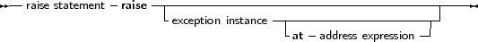

The raise statement is as follows:
_________________________________________________________________________________________________________Raise statement

___________________________________________________________________
This statement will raise an exception. If it is specified, the exception instance must be an initialized instance of any class, which is the raise type. The exception address is optional. If it is not specified, the compiler will provide the address by itself. If the exception instance is omitted, then the current exception is re-raised. This construct can only be used in an exception handling block (see further).
Remark: Control never returns after an exception block. The control is transferred to the first try...finally or try...except statement that is encountered when unwinding the stack. If no such statement is found, the Free Pascal Run-Time Library will generate a run-time error 217 (see also section 14.5, page 555). The exception address will be printed by the default exception handling routines.
As an example: The following division checks whether the denominator is zero, and if so, raises an exception of type EDivException
Type EDivException = Class(Exception);
Function DoDiv (X,Y : Longint) : Integer; begin If Y=0 then Raise EDivException.Create (’Division by Zero would occur’); Result := X Div Y; end; |
The class Exception is defined in the Sysutils unit of the rtl. (section 14.5, page 555)
Remark: Although the Exception class is used as the base class for exceptions throughout the code, this is just an unwritten agreement: the class can be of any type, and need not be a descendent of the Exception class.
Of course, most code depends on the unwritten agreement that an exception class descends from Exception.